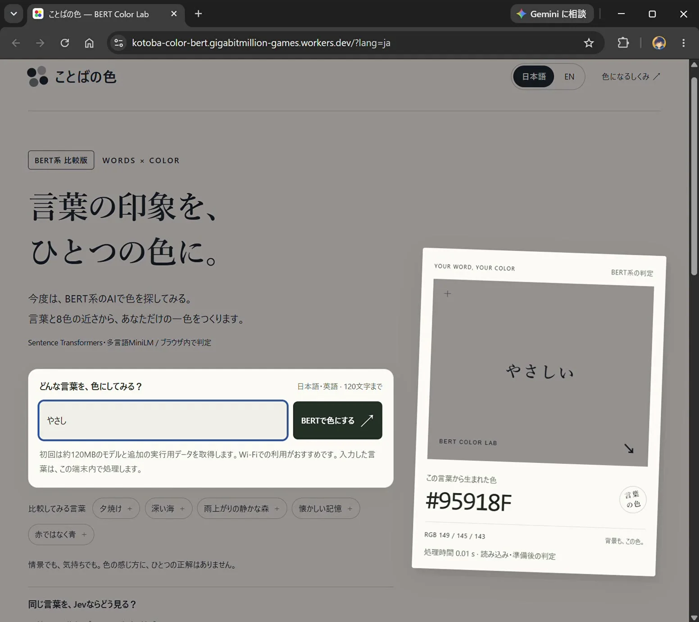
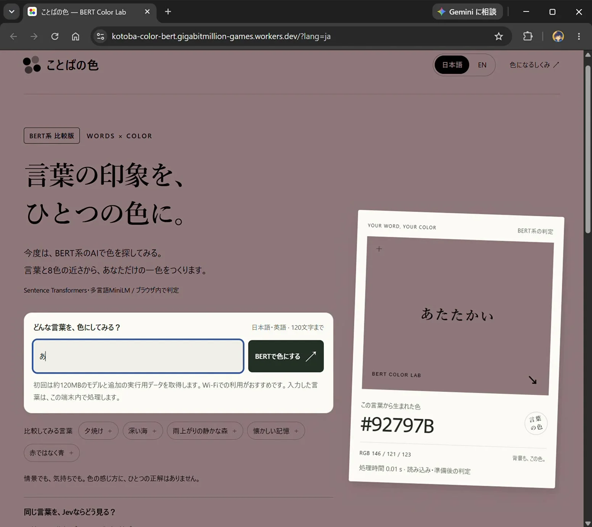

このUIがしていること
「Jevの必要はあるのか」という問いを、同じ入力と出力の画面で比べるための材料として読める。固定の分類器は、基準を自分で作り管理する必要があるが、判断が透明で、端末内で処理できる。
- 初回に約120MBのモデルを取得する注意書きがあり、待ち時間と通信量が使い勝手の代償として明示されている。
- 「入力した言葉は、この端末内で処理します」と、データの扱いも画面で示している。
- 作者の感想は、基準づくりと更新のコストが大きく、基準がブラックボックス化するのを避けたいシステムにはBERT系が向く、という趣旨。これは作者の見解で、画面から検証できる事実ではない。
- 画面の見出しに「同じ言葉を、Jevならどう見る？」があるが、その内容は掲載フレームでは確認できない。
キャプチャ
{kind=link}

（原寸の画像を開く）{kind=link}

（原寸の画像を開く）見る箇所入力欄、色のカード（言葉、hex、RGB、処理時間）、「BERT系 比較版」のラベル、初回のモデル取得に関する注意書き
入力から画面の変化まで
-
判断への入力
短い言葉（日本語・英語、120文字まで）。サンプルとして「夕焼け」「深い海」「雨上がりの静かな森」などが比較用に並ぶ。
-
Jevの判断
この画面ではJevは動いていない。言葉と8色の近さから一つの色を作る処理をBERT系（Sentence Transformers・多言語MiniLM）が行い、判定はブラウザ内で完結する。
-
結果がUIをどう変えるか
入力した言葉が色のカードになり、背景も同じ色に変わる（1枚目は#95918F、2枚目は#92797B）。hex、RGB、処理時間（0.01秒、読み込み・準備後）が付く。
- 判断型の見立て
- 不明出典から判断できない
- 映っているのはBERT系の比較版で、Jevの質問型はこの動画・画像から確認できない。
Jevとの適合
Jevが向くのは、基準を文章で書き換えながら試す場面。基準が固まり、大量に回す場合は固定の分類器が向くこともある、という対比の材料になる。ただしこの事例は、Jev自身のふるまいを直接示していないため、Jev事例としては根拠が弱い。
確認範囲と未確認事項
日本語の作者による投稿動画と、作者が示すBERT系の比較版アプリを確認。映っているのはBERT系（ブラウザ内で判定）の比較版であり、Jevが動いている画面ではない。元のJev版アプリはこの動画・画像では確認できない。「Jevで作ったアプリからBERT版を作った」という作者の説明が根拠。
- 確認済み動画から得た2枚の静止画に見えるBERT系比較版の画面、処理時間、初回取得の注意書き、投稿文の作者の説明
- 未検証元のJev版の画面、JevとBERTの出力の比較、精度、費用の比較、作者が示すアプリの現在の動作
- 推定扱い「8色との近さ」から色を作る仕組みの詳細
- 引用X投稿は2026-09-20（UTC）。動画から必要な範囲の静止画を切り出して引用。権利は作者に帰属する